; Wenn A ein großer Parameter ist, können wir die Gleichung neu definieren mit
; Wenn A ein großer Parameter ist, können wir die Gleichung neu definieren mit  \cdot x") . Nach der Anpassung erhalten wir 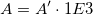;; Wenn A ein kleiner Parameter ist, können wir die Gleichung neu definieren mit 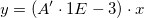. Nach der Anpassung erhalten wir
. Nach der Anpassung erhalten wir 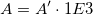;; Wenn A ein kleiner Parameter ist, können wir die Gleichung neu definieren mit 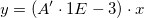. Nach der Anpassung erhalten wir  ;
;Letztes Update: 20.07.2017
Bei einer Kurvenanpassung können Sie auf folgende Probleme stoßen:
In beiden Fällen müssen wir die Gleichungen neu definieren, um sehr große und sehr kleine Parameter zu vermeiden. Zum Beispiel:
; Wenn A ein großer Parameter ist, können wir die Gleichung neu definieren mit . Nach der Anpassung erhalten wir 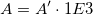;; Wenn A ein kleiner Parameter ist, können wir die Gleichung neu definieren mit 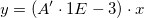. Nach der Anpassung erhalten wir ;
Ein weiteres Beispiel ist die nichtlineare implizite Diodenfunktion:
}} + \frac{{V - I \cdot Rs}}{{Rsh}} - I\,\!") , k ist in 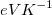 als Einheit.
, k ist in 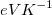 als Einheit.
Um mit dieser Funktion eine Anpassung durchzuführen können wir zuerst den Parameter 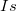 auf 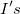 zurücksetzen, wobei 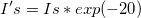. Auf diese Weise wird der Parameter nicht zu klein.
![f = I's \cdot [{e^{(\frac{{V - I \cdot Rs}}{{k \cdot T}} - 20)}} - {e^{ (- 20)}}] + \frac{{V - I \cdot Rs}}{{Rsh}} - I\,\!](../images/How_to_get_a_good_fit_with_a_very_large_or_a_very_small_parameter/math-ded0509a37dacb36a4792dc79ab45e1b.png "f = I's \cdot [{e^{(\frac{{V - I \cdot Rs}}{{k \cdot T}} - 20)}} - {e^{ (- 20)}}] + \frac{{V - I \cdot Rs}}{{Rsh}} - I\,\!")
Auf diese Weise können wir den sehr kleinen Parameter vermeiden und am Ende den Fit konvergieren.
Schlüsselwörter:guter Anpassung, nicht konvergieren, fehlender Wert in Standardfehler, Diodenfunktion